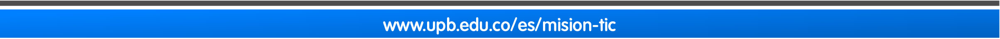

Aprende cómo implementar las operaciones básicas con MongoDB.
Acciones de aprendizaje
1. Lee la siguiente guía sobre como modelar bases de datos no relacionales:
- Peña, J. (2021). Guía para la construcción de una base No-relacional. UPB. [Presentación de diapositivas].
2. Realiza el taller de práctica sobre colecciones y operaciones en MongoDB:
-
- Operaciones con MongoDB: Taller práctico.
3. Comprende la documentación oficial de MongoDB para introducir el principio de modelado de datos:
-
- MongoDB. (2021). Data Modeling Introduction. Mongodb.com
Formas de trabajo
-
Individual: el estudiante es responsable de su proceso de aprendizaje y de las actividades que realiza.
Tiempos (Semana 2)
- Trabajo autónomo del estudiante: 5 horas
- Acompañamiento docente: 3 horas.
